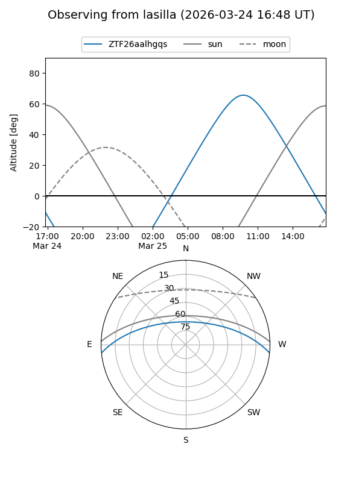
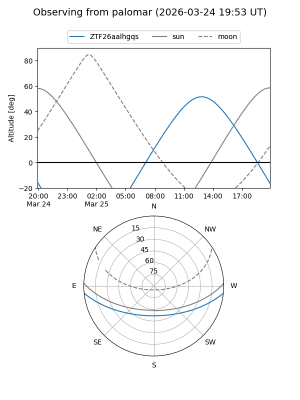

ZTF26aalhgqs
Target ZTF26aalhgqs at 2026-03-25 13:14
Aliases and brokers:
FINK: link
Lasair: link
ALeRCE: link
alt names
ZTF26aalhgqs (ztf,fink_ztf)
Coordinates:
equatorial (ra, dec) = 258.2497,-4.92250
equatorial (HMS+DMS) = 17:12:59.92,-04:55:20.99
galactic (l, b) = (16.5924,+19.27663)
Flags:
Photometry:
last ztfg=15.97
1 ztfg detections
Lightcurve
Visibility


Additional plots